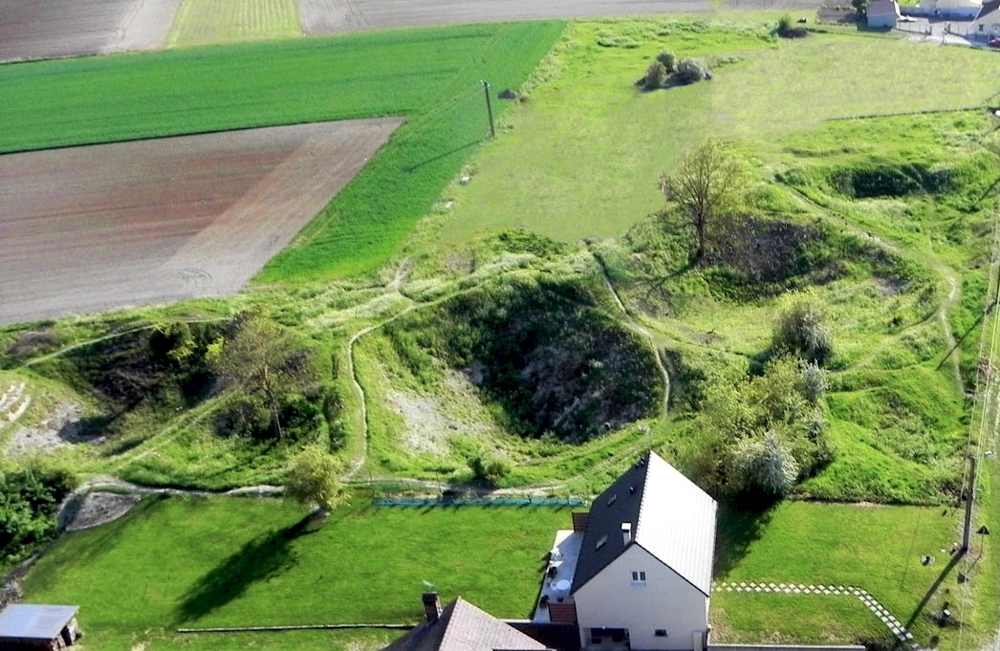
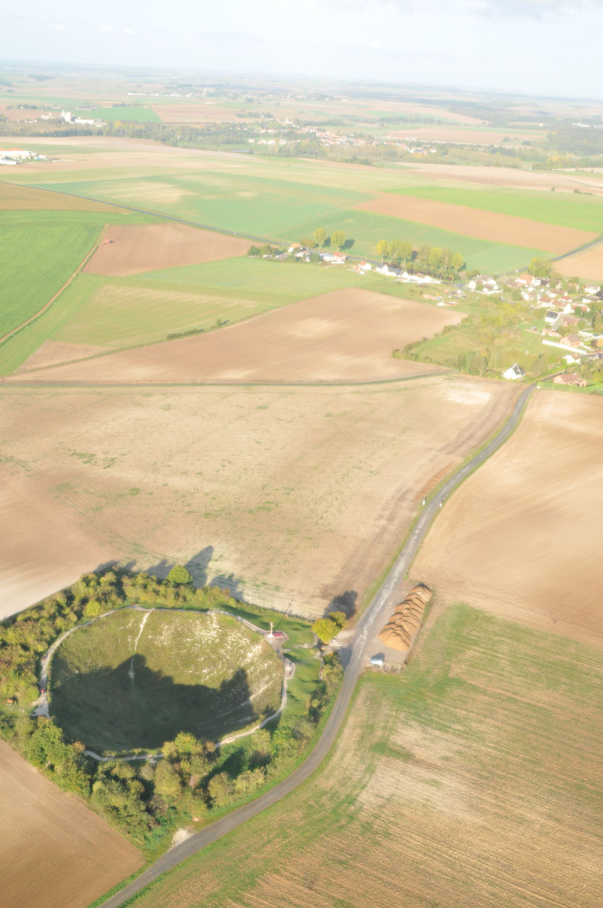
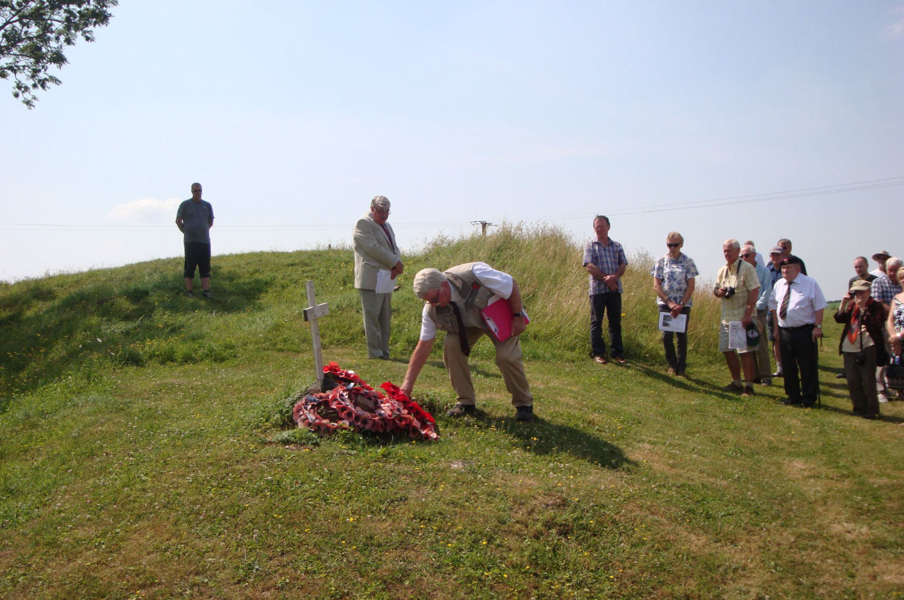
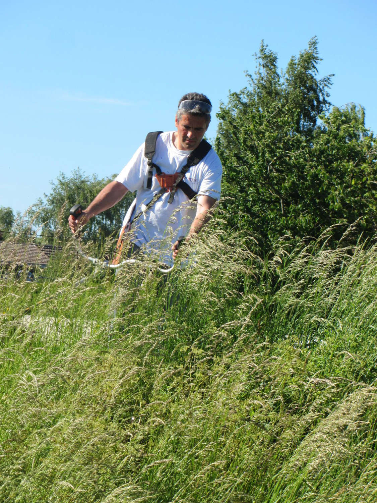
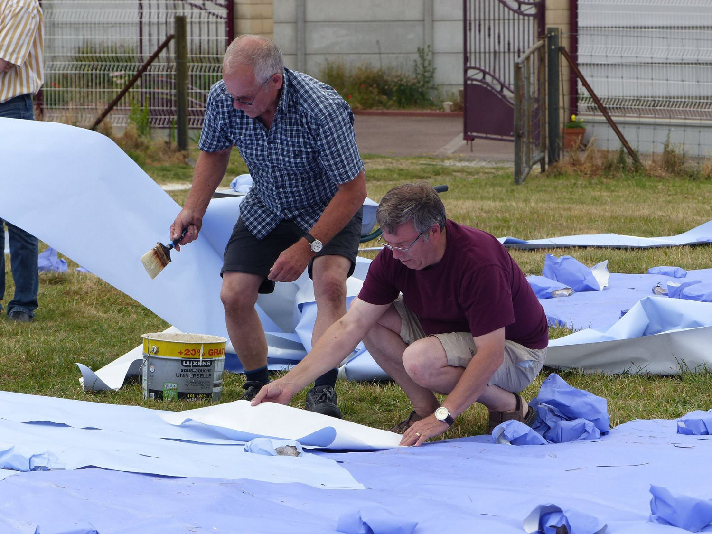
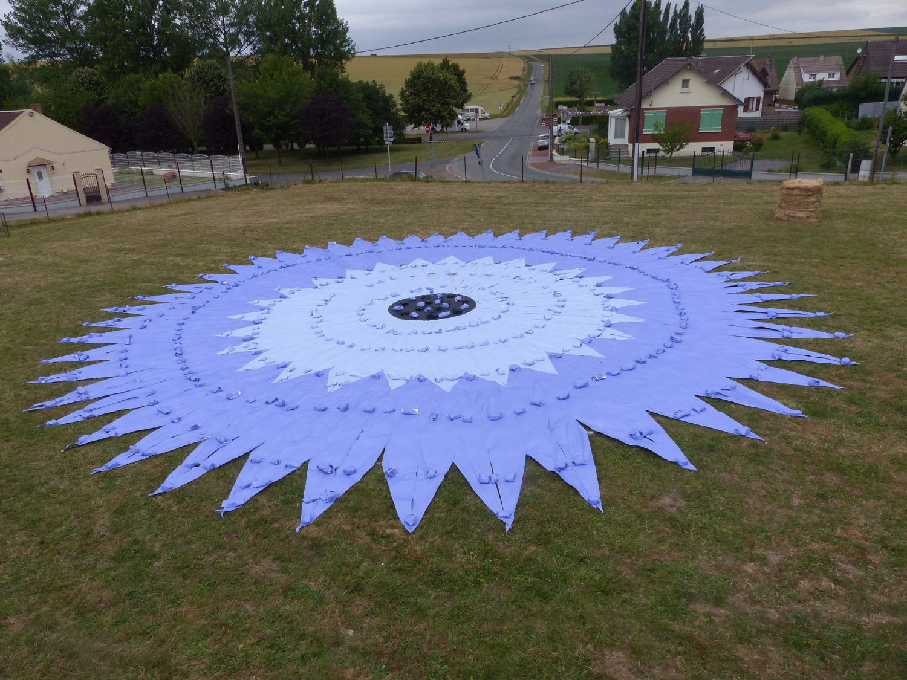
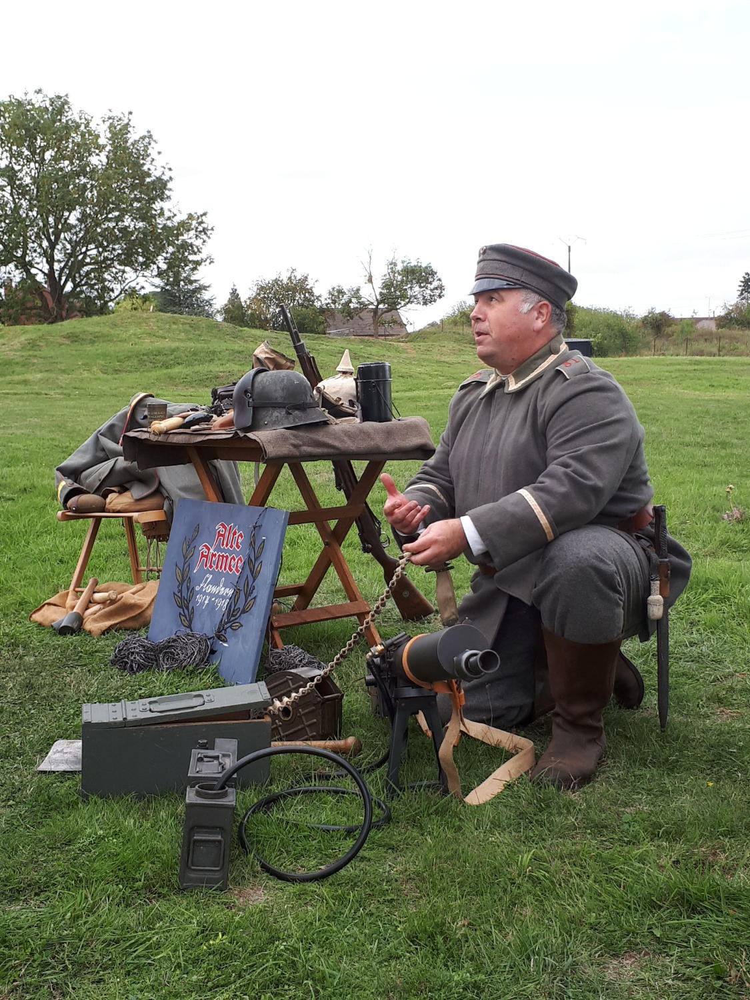
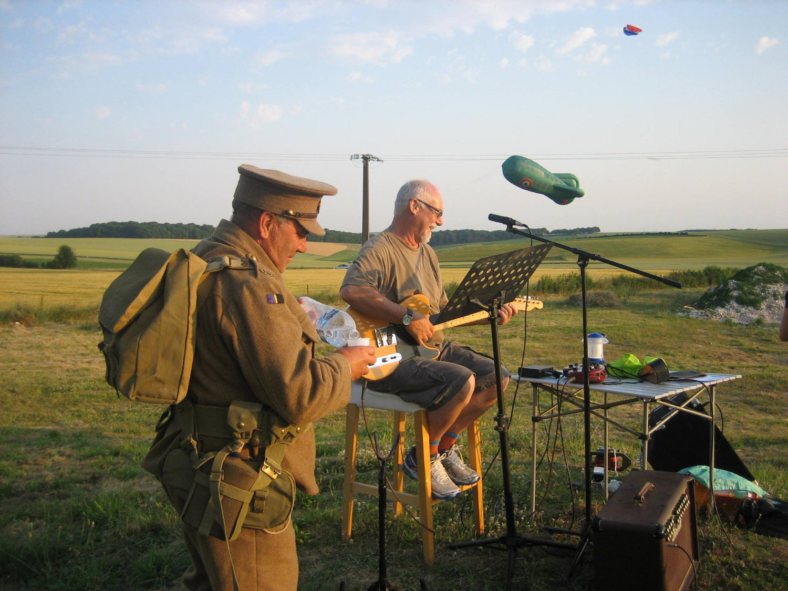
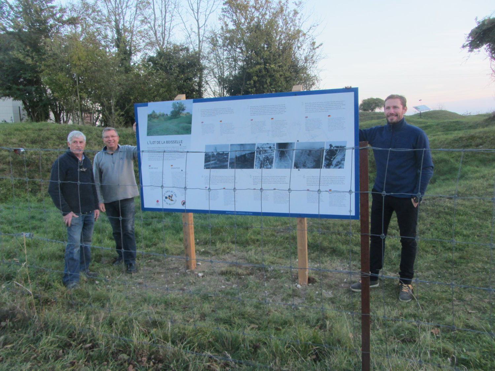
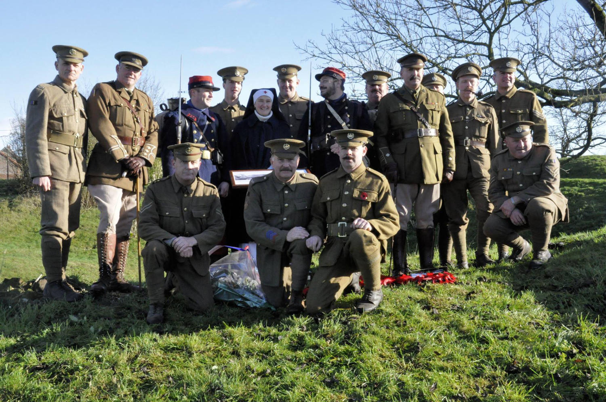

Le site de l'îlot est l'une des sections les mieux préservés de la ligne de front de la Première Guerre mondiale. Les vestiges tant en surface qu'en sous-sol constituent un témoignage vibrant des soldats français, allemands et britanniques qui s'y sont battus.
Le site historique de l'îlot est ouvert à la visite sur rendez-vous uniquement auprès des Amis de l'îlot de La Boisselle. Venez profiter d'une expérience unique en compagnie d'un guide privilégié dans les pas des soldats qui se sont succédés à l'îlot.

Une convention de mise à disposition du site de l'îlot, pour une durée de 50 ans, a été signée le 14 décembre 2013 par les propriétaires du terrain afin d'aider les Amis de l'îlot à valoriser cet ancien secteur du front de la Somme et à transmettre le souvenir des soldats disparus.







